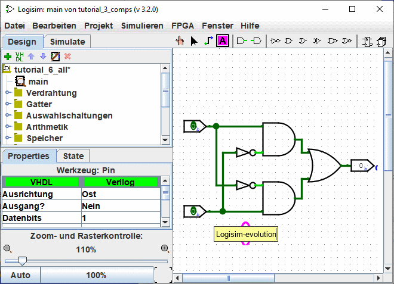

Früher: Schritt 2: Leitungen hinzufügen
Dieses Dokument wurde automatisch übersetzt. Hier können Sie uns helfen, sie zu verbessern.
Schritt 3: Text hinzufügen
Das Hinzufügen von Text ist für das Funktionieren einer Schaltung nicht notwendig. Wenn Sie aber Ihre Schaltungen an jemanden weitergeben möchten (z.B. an einen Lehrer), dann können Beschriftungen bei der Erklärung helfen, wie einzelne Teile der Schaltung funktionieren.
Wählen Sie das Textwerkzeug ( ) aus. Jetzt können Sie einen der Eingänge anklicken, und diesen durch Eintippen mit einer Beschriftung versehen. (Es ist besser, direkt den Eingangspin anzuklicken und mit einer Beschriftung zu versehen, als den Text frei zu platzieren, weil die Beschriftung gegebenenfalls mit dem Pin verschoben wird.) Dasselbe können Sie auch mit dem Ausgangspin machen. Oder Sie können einfach auf einen beliebigen Platz der Arbeitsfläche klicken, und den Text dort eintippen.
) aus. Jetzt können Sie einen der Eingänge anklicken, und diesen durch Eintippen mit einer Beschriftung versehen. (Es ist besser, direkt den Eingangspin anzuklicken und mit einer Beschriftung zu versehen, als den Text frei zu platzieren, weil die Beschriftung gegebenenfalls mit dem Pin verschoben wird.) Dasselbe können Sie auch mit dem Ausgangspin machen. Oder Sie können einfach auf einen beliebigen Platz der Arbeitsfläche klicken, und den Text dort eintippen.

Viele Komponenten können beschriftet werden, wenn Sie z.B. in eine der Logikgatter klicken, können Sie auch eine Beschriftung vergeben.

Es ist möglich, ein Etikett auf verschiedene andere Arten zu modifizieren.
-
Mit einem Doppelklick auf die Komponente mit dem "Edit"-Werkzeug
(
Mit einem Klick auf ein Etikett mit den "Text"-Werkzeug (
Durch Bearbeiten der Eigenschaft "label" in der Attributtabelle. .

Weitert: Schritt 4: Testen der Schaltung